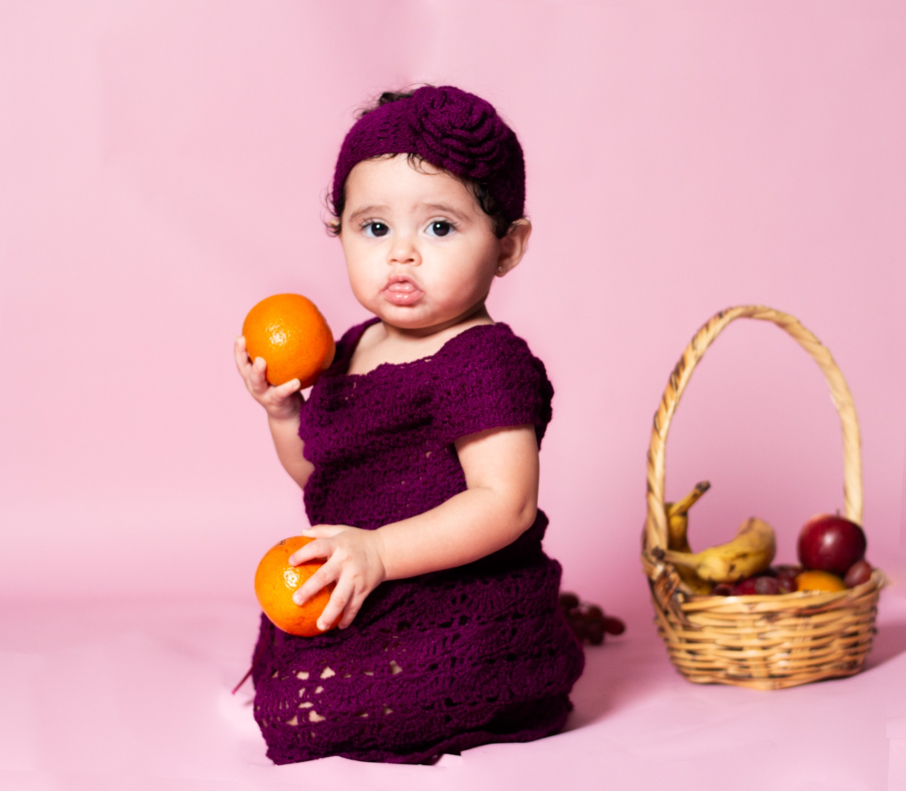
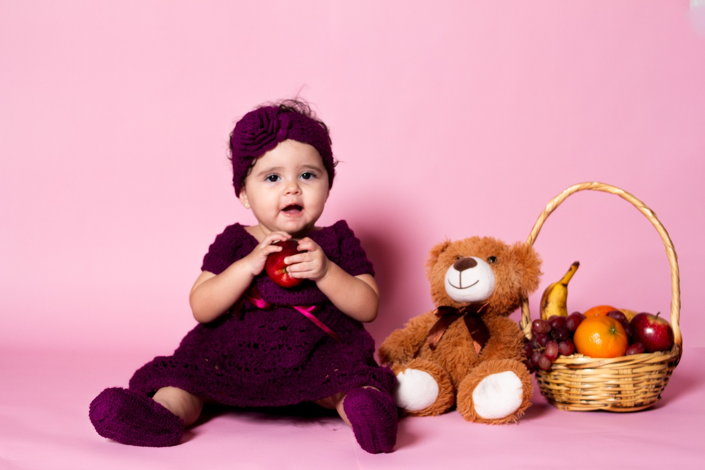

☁️ 🦄 🌈 ☁️
Ailed Andrómeda
Mi primer añito y mi bautizo
Con mucha ilusión queremos compartir contigo este día tan especial.
✦ ✧ ✦
27 · Diciembre · 2026
Fecha provisional para demostración
Falta muy poquito...
🕊️ ✝️
Mi bautizo
12:00 p. m.
Ceremonia religiosa
Ubicación de ejemplo por confirmar
🦄 🎂 🌈
Mi primer añito
2:00 p. m.
Recepción y festejo
Ubicación de ejemplo por confirmar
Mis momentos mágicos
Un poquito de mi mundo lleno de sonrisas


💌 ✨
Confirma tu asistencia
Nos encantará compartir contigo este día.
Botón de demostración: agregaremos el WhatsApp de la familia antes de publicar la versión definitiva.